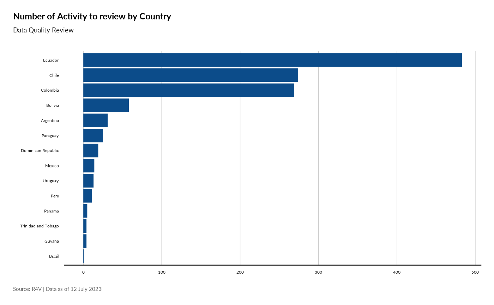
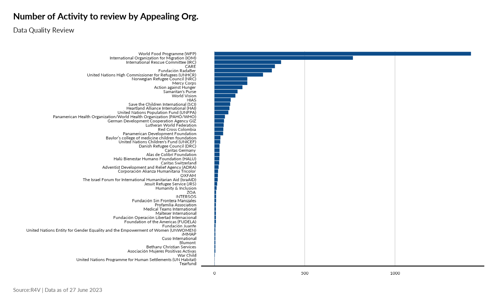

library(ActivtityInfoQuality)
#> Warning: replacing previous import 'shiny::dataTableOutput' by
#> 'DT::dataTableOutput' when loading 'ActivtityInfoQuality'
#> Warning: replacing previous import 'shiny::renderDataTable' by
#> 'DT::renderDataTable' when loading 'ActivtityInfoQuality'fct_read_lookup
lookup_dfadmin1 <- fct_read_lookup(type = "admin1")
head(lookup_dfadmin1, 10)
#> # A tibble: 10 × 4
#> Country Admin1 ISOCode countryadmin1
#> <chr> <chr> <chr> <chr>
#> 1 Argentina Buenos Aires AR-B Argentina Buenos Aires
#> 2 Argentina Catamarca AR-K Argentina Catamarca
#> 3 Argentina Chaco AR-H Argentina Chaco
#> 4 Argentina Chubut AR-U Argentina Chubut
#> 5 Argentina Ciudad Autonoma de Buenos Aires AR-C Argentina Ciudad Autonoma …
#> 6 Argentina Córdoba AR-X Argentina Córdoba
#> 7 Argentina Corrientes AR-W Argentina Corrientes
#> 8 Argentina Entre Ríos AR-E Argentina Entre Ríos
#> 9 Argentina Formosa AR-P Argentina Formosa
#> 10 Argentina Jujuy AR-Y Argentina Jujuy
lookup_dfadmin2 <- fct_read_lookup(type = "admin2")
head(lookup_dfadmin2, 10)
#> # A tibble: 10 × 4
#> Country Admin1 Admin2 admin1and2
#> <chr> <chr> <chr> <chr>
#> 1 Argentina Buenos Aires 25 de Mayo (Buenos Aires) Buenos Aires 25 de May…
#> 2 Argentina Buenos Aires 9 de Julio (Buenos Aires) Buenos Aires 9 de Juli…
#> 3 Argentina Buenos Aires Adolfo Alsina (Buenos Aires) Buenos Aires Adolfo Al…
#> 4 Argentina Buenos Aires Adolfo Gonzáles Chaves Buenos Aires Adolfo Go…
#> 5 Argentina Buenos Aires Alberti Buenos Aires Alberti
#> 6 Argentina Buenos Aires Almirante Brown (Buenos Aires) Buenos Aires Almirante…
#> 7 Argentina Buenos Aires Arrecifes Buenos Aires Arrecifes
#> 8 Argentina Buenos Aires Avellaneda (Buenos Aires) Buenos Aires Avellaned…
#> 9 Argentina Buenos Aires Ayacucho (Buenos Aires) Buenos Aires Ayacucho …
#> 10 Argentina Buenos Aires Azul Buenos Aires Azul
lookup_dfindicator <- fct_read_lookup(type = "indicator")
head(lookup_dfindicator, 10)
#> # A tibble: 10 × 5
#> CODE Subsector Indicator IndicatorType sectindic
#> <chr> <chr> <chr> <chr> <chr>
#> 1 RE-CP1 Protection (Child Protection) # of refug… Direct Assis… Protecti…
#> 2 RE-CP2 Protection (Child Protection) # of refug… Direct Assis… Protecti…
#> 3 RE-CP3 Protection (Child Protection) # of indiv… Capacity Bui… Protecti…
#> 4 RE-CP4 Protection (Child Protection) # of campa… Campaign Protecti…
#> 5 RE-CSC01 Common Services (Coordination) # of multi… Other Common S…
#> 6 RE-CSCO01 Common Services (Communication) # of impre… Other Common S…
#> 7 RE-CSCO02 Common Services (Communication) # of views… Other Common S…
#> 8 RE-CSCO03 Common Services (Communication) # of commu… Other Common S…
#> 9 RE-CSCO04 Common Services (Communication) # of visit… Other Common S…
#> 10 RE-CSCO05 Common Services (Communication) # of insti… Capacity Bui… Common S…
lookup_dfpartner <- fct_read_lookup(type = "partner")
head(lookup_dfpartner, 10)
#> AOIDORG Name Type RMlead
#> 1 ORG001 100% Diversidad y Derechos NNGO <NA>
#> 2 ORG002 ACAPS INGO <NA>
#> 3 ORG003 ACTED INGO <NA>
#> 4 ORG004 Action against Hunger INGO <NA>
#> 5 ORG005 ActionAid INGO <NA>
#> 6 ORG006 Adventist Development and Relief Agency (ADRA) INGO <NA>
#> 7 ORG007 AID FOR AIDS INGO <NA>
#> 8 ORG008 AIDS Healthcare Foundation (AHF) INGO <NA>
#> 9 ORG009 Alas de Colibrí Foundation NNGO <NA>
#> 10 ORG010 Americares Foundation INGO <NA>fct_read_data
## Pulling everything... can be long..
df5W <- fct_read_data()
head( df5W, 10)
#> Country Admin1 Admin2
#> 1 Argentina Ciudad Autonoma de Buenos Aires <NA>
#> 2 Argentina Mendoza <NA>
#> 3 Argentina Ciudad Autonoma de Buenos Aires <NA>
#> 4 Argentina Jujuy Dr. Manuel Belgrano
#> 5 Argentina Ciudad Autonoma de Buenos Aires <NA>
#> 6 Argentina Ciudad Autonoma de Buenos Aires <NA>
#> 7 Argentina Ciudad Autonoma de Buenos Aires <NA>
#> 8 Argentina Ciudad Autonoma de Buenos Aires <NA>
#> 9 Argentina Ciudad Autonoma de Buenos Aires <NA>
#> 10 Argentina Ciudad Autonoma de Buenos Aires <NA>
#> Appealing_org Implementation
#> 1 International Organization for Migration (IOM) Yes
#> 2 International Organization for Migration (IOM) Yes
#> 3 International Organization for Migration (IOM) Yes
#> 4 International Organization for Migration (IOM) Yes
#> 5 International Organization for Migration (IOM) Yes
#> 6 International Organization for Migration (IOM) Yes
#> 7 International Organization for Migration (IOM) Yes
#> 8 International Organization for Migration (IOM) Yes
#> 9 International Organization for Migration (IOM) Yes
#> 10 International Organization for Migration (IOM) Yes
#> Implementing_partner Month
#> 1 Argentine Catholic Migration Commission Foundation (FCCAM) 2023-01
#> 2 Argentine Catholic Migration Commission Foundation (FCCAM) 2023-01
#> 3 Jesuit Migrant Service (JMS) 2023-01
#> 4 Red Cross Argentina 2023-01
#> 5 Jesuit Migrant Service (JMS) 2023-01
#> 6 Jesuit Migrant Service (JMS) 2023-01
#> 7 Buenos Aires Psychoanalytic Association 2023-01
#> 8 Buenos Aires Psychoanalytic Association 2023-01
#> 9 Buenos Aires Psychoanalytic Association 2023-01
#> 10 Association of Venezuelan Psychologists in Argentina 2023-01
#> Subsector
#> 1 Protection (General)
#> 2 Protection (General)
#> 3 Protection (General)
#> 4 Shelter
#> 5 Shelter
#> 6 Health
#> 7 Health
#> 8 Health
#> 9 Health
#> 10 Health
#> Indicator
#> 1 # of refugees and migrants who received protection-related assistance and specialized services
#> 2 # of refugees and migrants who received protection-related assistance and specialized services
#> 3 # of refugees and migrants who received protection-related assistance and specialized services
#> 4 # of refugees and migrants receiving short-term accommodation support in hotel rooms
#> 5 # of refugees and migrants receiving short-term rental support (up to 3 months)
#> 6 # of refugees and migrants benefiting from primary health care consultations
#> 7 # of refugees and migrants benefiting from primary health care consultations
#> 8 # of refugees and migrants benefiting from primary health care consultations
#> 9 # of refugees and migrants benefiting from primary health care consultations
#> 10 # of refugees and migrants benefiting from primary health care consultations
#> Activity_Name
#> 1 Fondo de protección
#> 2 Fondo de protección
#> 3 Asesoría legal
#> 4 Alojamiento
#> 5 Alojamiento
#> 6 SMAPS
#> 7 SMAPS
#> 8 SMAPS
#> 9 SMAPS
#> 10 SMAPS
#> Activity_Description
#> 1 Fondo de protección
#> 2 Fondo de protección
#> 3 Asesoría legal
#> 4 Noches en habitaciones de hotel en frontera
#> 5 Alquiler temporario
#> 6 Breve terapia individual
#> 7 Grupos de contención
#> 8 Psicoterapia individual
#> 9 Psiquiatría individual
#> 10 Actividades de asistencia directa a través de talleres sobre diversas temáticas
#> RMRPActivity CVA Value Delivery_mechanism Quantity_output Total_monthly
#> 1 Yes No NA <NA> NA 56
#> 2 Yes No NA <NA> NA 31
#> 3 Yes No NA <NA> NA 65
#> 4 Yes No NA <NA> NA 3
#> 5 Yes No NA <NA> NA 69
#> 6 Yes No NA <NA> NA 13
#> 7 Yes No NA <NA> NA 23
#> 8 Yes No NA <NA> NA 3
#> 9 Yes No NA <NA> NA 2
#> 10 Yes No NA <NA> NA 72
#> New_beneficiaries IN_DESTINATION IN_TRANSIT Host_Communities PENDULARS
#> 1 56 56 NA NA NA
#> 2 31 31 NA NA NA
#> 3 65 65 NA NA NA
#> 4 3 3 NA NA NA
#> 5 69 69 NA NA NA
#> 6 13 13 NA NA NA
#> 7 2 23 NA NA NA
#> 8 1 1 NA NA NA
#> 9 2 2 NA NA NA
#> 10 72 72 NA NA NA
#> Returnees Girls Boys Women Men Other_under Other_above
#> 1 NA 8 10 22 16 NA NA
#> 2 NA 5 4 12 10 NA NA
#> 3 NA 15 13 25 12 NA NA
#> 4 NA NA NA NA 3 NA NA
#> 5 NA 16 9 27 17 NA NA
#> 6 NA NA 2 8 3 NA NA
#> 7 NA 2 NA NA NA NA NA
#> 8 NA NA NA NA 1 NA NA
#> 9 NA NA NA 2 NA NA NA
#> 10 NA 3 7 57 5 NA NA
## testing the filters
df5Wctr <- fct_read_data(filter = "country",
value = "Colombia")
head( df5Wctr, 10)
#> Country Admin1 Admin2
#> 1 Colombia Santander Bucaramanga
#> 2 Colombia Atlántico Barranquilla
#> 3 Colombia Atlántico Barranquilla
#> 4 Colombia Atlántico Barranquilla
#> 5 Colombia Atlántico Barranquilla
#> 6 Colombia Atlántico Barranquilla
#> 7 Colombia Santander Bucaramanga
#> 8 Colombia Norte de Santander San José de Cúcuta
#> 9 Colombia Norte de Santander Villa del Rosario
#> 10 Colombia Atlántico Santa Lucía (Atlántico)
#> Appealing_org Implementation
#> 1 United Nations Programme for Human Settlements (UN Habitat) No
#> 2 United Nations Programme for Human Settlements (UN Habitat) No
#> 3 United Nations Programme for Human Settlements (UN Habitat) No
#> 4 United Nations Programme for Human Settlements (UN Habitat) No
#> 5 United Nations Programme for Human Settlements (UN Habitat) No
#> 6 United Nations Programme for Human Settlements (UN Habitat) No
#> 7 United Nations Programme for Human Settlements (UN Habitat) No
#> 8 United Nations Programme for Human Settlements (UN Habitat) No
#> 9 United Nations Programme for Human Settlements (UN Habitat) No
#> 10 Tearfund No
#> Implementing_partner Month Subsector
#> 1 <NA> 2023-01 Integration
#> 2 <NA> 2023-01 Integration
#> 3 <NA> 2023-01 Integration
#> 4 <NA> 2023-01 Integration
#> 5 <NA> 2023-01 Integration
#> 6 <NA> 2023-01 Common Services (Communication)
#> 7 <NA> 2023-01 Common Services (Communication)
#> 8 <NA> 2023-01 Common Services (Communication)
#> 9 <NA> 2023-01 Common Services (Communication)
#> 10 <NA> 2023-01 Food Security
#> Indicator
#> 1 # of people reached by social cohesion activities
#> 2 # of people reached by social cohesion activities
#> 3 # of people reached by social cohesion activities
#> 4 # of persons capacitated to promote the integration of refugees and migrants
#> 5 # of persons capacitated to promote the integration of refugees and migrants
#> 6 # of impressions/views to social media messages against xenophobia and discrimination and awareness-raising activities
#> 7 # of impressions/views to social media messages against xenophobia and discrimination and awareness-raising activities
#> 8 # of impressions/views to social media messages against xenophobia and discrimination and awareness-raising activities
#> 9 # of impressions/views to social media messages against xenophobia and discrimination and awareness-raising activities
#> 10 # of refugees, migrants and members of affected host communities that receive food assistance
#> Activity_Name
#> 1 Implementación de Urbanismo Táctico en la Canaleta y las Escaleras de conexión barrial
#> 2 Implementación de acciones de urbanismo táctico: plaza escenario
#> 3 Implementación de acciones de urbanismo táctico: adecuación del parque de las cometas
#> 4 Laboratorio Urbano para la Integración Territorial
#> 5 Placemaking con estudiantes de arquitectura
#> 6 Visibilidad proyecto Ciudades Incluyentes, Comunidades Solidarias
#> 7 Visibilidad proyecto Ciudades Incluyentes, Comunidades Solidarias
#> 8 Visibilidad proyecto Ciudades Incluyentes, Comunidades Solidarias
#> 9 Visibilidad proyecto Ciudades Incluyentes, Comunidades Solidarias
#> 10 Comedor infantil
#> Activity_Description
#> 1 Durante 5 días se adecuo un espacio en la canaleta, implementado como Aula Abierta y se mejoraron las escaleras y su entorno, dándole luz para NNA y comunidad en general por medio de Urbanismo Táctico
#> 2 Co-construcción de un nuevo espacio público (incluyendo delimitación de andenes) a partir de la construcción de una plaza comunitaria multifuncional en torno al salón comunitario de Villa del Mar.
#> 3 Co-adecuación de mejoras de la cancha de futbol del parque de las cometas
#> 4 Recorridos académicos con estudiantes de arquitectura de la Universidad del Norte, que tienen como propósito facilitar la formulación de planes y proyectos de desarrollo urbano y espacio público para el sector de Villa del Mar.
#> 5 Actividad de voluntariado de estudiantes de arquitectura de la Universidad del Norte, que consistió en pintada de espacio público en la plaza escenario y en el parque de las cometas
#> 6 Personas alcanzadas con mensajes e instrumentos que promueven la integración de refugiados y migrantes venezolanos con sus comunidades de acogida
#> 7 Personas alcanzadas con mensajes e instrumentos que promueven la integración de refugiados y migrantes venezolanos con sus comunidades de acogida
#> 8 Personas alcanzadas con mensajes e instrumentos que promueven la integración de refugiados y migrantes venezolanos con sus comunidades de acogida
#> 9 Personas alcanzadas con mensajes e instrumentos que promueven la integración de refugiados y migrantes venezolanos con sus comunidades de acogida
#> 10 Comedor infantil para niños migrantes y colombianos de comunidad de acogida. Servicio de Lunes a Viernes, almuerzo balanceado y nutritivo
#> RMRPActivity CVA Value Delivery_mechanism Quantity_output Total_monthly
#> 1 Yes No NA <NA> 20 20
#> 2 Yes No NA <NA> 60 60
#> 3 Yes No NA <NA> 60 60
#> 4 Yes No NA <NA> 35 35
#> 5 Yes No NA <NA> 58 58
#> 6 Yes No NA <NA> 308 308
#> 7 Yes No NA <NA> 74 74
#> 8 Yes No NA <NA> 100 100
#> 9 Yes No NA <NA> 23 23
#> 10 No No NA <NA> 100 100
#> New_beneficiaries IN_DESTINATION IN_TRANSIT Host_Communities PENDULARS
#> 1 20 NA NA NA NA
#> 2 60 NA NA NA NA
#> 3 60 NA NA NA NA
#> 4 35 NA NA NA NA
#> 5 58 NA NA NA NA
#> 6 308 NA NA NA NA
#> 7 74 NA NA NA NA
#> 8 100 NA NA NA NA
#> 9 23 NA NA NA NA
#> 10 100 100 NA NA NA
#> Returnees Girls Boys Women Men Other_under Other_above
#> 1 NA NA NA NA NA NA NA
#> 2 NA NA NA NA NA NA NA
#> 3 NA NA NA NA NA NA NA
#> 4 NA NA NA NA NA NA NA
#> 5 NA NA NA NA NA NA NA
#> 6 NA NA NA NA NA NA NA
#> 7 NA NA NA NA NA NA NA
#> 8 NA NA NA NA NA NA NA
#> 9 NA NA NA NA NA NA NA
#> 10 30 NA 20 50 NA 50 NA
df5Wpart <- fct_read_data(filter = "partner",
value = "United Nations High Commissioner for Refugees (UNHCR)")
head( df5Wpart , 10)
#> Country Admin1 Admin2
#> 1 Argentina Ciudad Autonoma de Buenos Aires <NA>
#> 2 Argentina Buenos Aires <NA>
#> 3 Argentina Buenos Aires <NA>
#> 4 Argentina Buenos Aires <NA>
#> 5 Argentina Buenos Aires <NA>
#> 6 Argentina Buenos Aires <NA>
#> 7 Argentina Ciudad Autonoma de Buenos Aires <NA>
#> 8 Argentina Ciudad Autonoma de Buenos Aires <NA>
#> 9 Argentina Córdoba <NA>
#> 10 Argentina Ciudad Autonoma de Buenos Aires <NA>
#> Appealing_org Implementation
#> 1 United Nations High Commissioner for Refugees (UNHCR) Yes
#> 2 United Nations High Commissioner for Refugees (UNHCR) Yes
#> 3 United Nations High Commissioner for Refugees (UNHCR) Yes
#> 4 United Nations High Commissioner for Refugees (UNHCR) Yes
#> 5 United Nations High Commissioner for Refugees (UNHCR) Yes
#> 6 United Nations High Commissioner for Refugees (UNHCR) Yes
#> 7 United Nations High Commissioner for Refugees (UNHCR) Yes
#> 8 United Nations High Commissioner for Refugees (UNHCR) Yes
#> 9 United Nations High Commissioner for Refugees (UNHCR) Yes
#> 10 United Nations High Commissioner for Refugees (UNHCR) Yes
#> Implementing_partner Month
#> 1 Adventist Development and Relief Agency (ADRA) 2023-01
#> 2 Adventist Development and Relief Agency (ADRA) 2023-01
#> 3 Argentine Commission for Refugees and Migrants (CAREF) 2023-01
#> 4 Caritas Bolivia 2023-01
#> 5 Mirares 2023-01
#> 6 Mirares 2023-01
#> 7 Servicio Ecuménico para la Dignidad Humana 2023-01
#> 8 Semillas para la Democracia 2023-01
#> 9 Semillas para la Democracia 2023-01
#> 10 Adventist Development and Relief Agency (ADRA) 2023-02
#> Subsector
#> 1 Shelter
#> 2 Integration
#> 3 Common Services (Transversal [CwC, PSEA, AAP])
#> 4 Multipurpose Cash Assistance (MPC)
#> 5 Integration
#> 6 Common Services (Transversal [CwC, PSEA, AAP])
#> 7 Integration
#> 8 Multipurpose Cash Assistance (MPC)
#> 9 Integration
#> 10 Multipurpose Cash Assistance (MPC)
#> Indicator
#> 1 # of refugees and migrants receiving essential households items
#> 2 # of refugees, migrants & host community members reached with financial inclusion and education activities
#> 3 # of individuals accessing two-way communication mechanisms to voice their needs/concerns/feedback
#> 4 # of individuals benefitting from multipurpose cash transfers (MPC)
#> 5 # of refugees, migrants and host community members receiving support activities/interventions enabling them to access or to keep a job
#> 6 # of individuals accessing two-way communication mechanisms to voice their needs/concerns/feedback
#> 7 # of refugees, migrants and host community members receiving support activities/interventions enabling them to access or to keep a job
#> 8 # of individuals benefitting from multipurpose cash transfers (MPC)
#> 9 # of refugees, migrants and host community members receiving support activities/interventions enabling them to access or to keep a job
#> 10 # of individuals benefitting from multipurpose cash transfers (MPC)
#> Activity_Name
#> 1 Entrega de kits de higiene y bebe individuales
#> 2 Asesorías para la inclusión financiera (apertura de cuenta bancaria, CUIT, otros)
#> 3 Personas que respondieron la encuesta del Servicio Social.
#> 4 Entrega de CBI
#> 5 Numero de entrevistas realizadas
#> 6 Numero de mails recibidos y contestados
#> 7 A través de la atención de casos y articulación con el Estado y OSC se derivará a la población a talleres de búsqueda laboral o espacios de información sobre normas laborales del MTSS.
#> 8 Intervention Humanitaria en Efectivo
#> 9 Gente que pidió asesoramiento para buscar empleo
#> 10 Entrega de CBI en modalidad efectivo y/o transferencia bancaria
#> Activity_Description
#> 1 Entrega de kits de higiene y bebe individuales
#> 2 Asesorías para la inclusión financiera (apertura de cuenta bancaria, CUIT, otros)
#> 3 Personas que respondieron la encuesta del Servicio Social.
#> 4 Entrega de CBI
#> 5 Numero de entrevistas realizadas
#> 6 Numero de mails recibidos y contestados
#> 7 A través de la atención de casos y articulación con el Estado y OSC se derivará a la población a talleres de búsqueda laboral o espacios de información sobre normas laborales del MTSS.
#> 8 Intervention Humanitaria en Efectivo
#> 9 Gente que pidió asesoramiento para buscar empleo
#> 10 Entrega de CBI en modalidad efectivo y/o transferencia bancaria
#> RMRPActivity CVA Value Delivery_mechanism Quantity_output Total_monthly
#> 1 Yes No NA <NA> NA 114
#> 2 Yes No NA <NA> NA 8
#> 3 Yes No NA <NA> NA 21
#> 4 Yes Yes 16300 Physical cash NA 33
#> 5 Yes No NA <NA> NA 20
#> 6 Yes No NA <NA> 6 NA
#> 7 Yes No NA <NA> NA 318
#> 8 Yes Yes 28000000 Physical cash NA 41
#> 9 Yes No NA <NA> NA 1
#> 10 Yes Yes 224000 Physical cash NA 13
#> New_beneficiaries IN_DESTINATION IN_TRANSIT Host_Communities PENDULARS
#> 1 90 17 NA 7 NA
#> 2 4 4 NA NA NA
#> 3 8 13 NA NA NA
#> 4 33 NA NA NA NA
#> 5 19 1 NA NA NA
#> 6 NA NA NA NA NA
#> 7 168 132 NA 18 NA
#> 8 21 20 NA NA NA
#> 9 1 NA NA NA NA
#> 10 13 NA NA NA NA
#> Returnees Girls Boys Women Men Other_under Other_above
#> 1 NA 21 27 43 23 NA NA
#> 2 NA NA NA 6 1 NA 1
#> 3 NA NA NA 13 8 NA NA
#> 4 NA 7 8 10 8 NA NA
#> 5 NA NA NA 20 NA NA NA
#> 6 NA NA NA NA NA NA NA
#> 7 NA NA NA 161 157 NA NA
#> 8 NA 8 5 16 12 NA NA
#> 9 NA NA NA NA 1 NA NA
#> 10 NA 4 3 4 2 NA NAfct_error_report
lookup_dfadmin1 <- fct_read_lookup(type = "admin1")
lookup_dfadmin2 <- fct_read_lookup(type = "admin2")
lookup_dfpartner <- fct_read_lookup(type = "partner")
lookup_dfindicator <- fct_read_lookup(type = "indicator")
df5Wpart <- fct_read_data(filter = "partner",
value = "United Nations High Commissioner for Refugees (UNHCR)")
resultpart <- fct_error_report(df5Wpart,
lookup_dfadmin1,
lookup_dfadmin2,
lookup_dfindicator,
lookup_dfpartner)
#> Loading required package: ggplot2
print(resultpart$plot_Country)
## Second example
df5Wctr <- fct_read_data(filter = "country",
value = "Peru")
resultctr <- fct_error_report(df5Wctr,
lookup_dfadmin1,
lookup_dfadmin2,
lookup_dfindicator,
lookup_dfpartner)
print(resultctr$plot_Appealing) 
## Display fixed data
head(resultctr[["ErrorReportclean"]], 10)
#> # A tibble: 10 × 38
#> Country Admin1 Admin2 Appealing_org Implementation Implementing_partner Month
#> <chr> <chr> <chr> <chr> <chr> <chr> <chr>
#> 1 Peru Lima Lima United Natio… Yes CEDRO 2023…
#> 2 Peru Lima Lima Internationa… No NA 2023…
#> 3 Peru Lima Lima Internationa… No NA 2023…
#> 4 Peru Arequ… Arequ… United Natio… Yes Encuentros SJS (Ser… 2023…
#> 5 Peru Piura Piura Internationa… No NA 2023…
#> 6 Peru Piura Piura Internationa… No NA 2023…
#> 7 Peru Lima Lima Internationa… No NA 2023…
#> 8 Peru Cusco Cusco Apurimac ETS No NA 2023…
#> 9 Peru Lima Lima United Natio… Yes Programa de Soporte… 2023…
#> 10 Peru Arequ… Arequ… Save the Chi… No NA 2023…
#> # ℹ 31 more variables: Subsector <chr>, Indicator <chr>, Activity_Name <chr>,
#> # Activity_Description <chr>, RMRPActivity <chr>, CVA <chr>, Value <dbl>,
#> # Delivery_mechanism <chr>, Quantity_output <dbl>, Total_monthly <dbl>,
#> # New_beneficiaries <dbl>, IN_DESTINATION <dbl>, IN_TRANSIT <dbl>,
#> # Host_Communities <dbl>, Girls <dbl>, Boys <dbl>, Women <dbl>, Men <dbl>,
#> # Other_under <dbl>, Other_above <dbl>, countryadmin1 <chr>,
#> # Admin1and2 <chr>, sectorindicator <chr>, IndicatorType <chr>, …fct_aggregate_data
lookup_dfindicator <- fct_read_lookup(type = "indicator")
df5W <- fct_read_data()
## Check all 6 combinations...
### Combination 1
resultpinsum <- fct_aggregate_data(df5W,
lookup_dfindicator,
proportions = "pin",
totalmodel = "sum"
)
head(resultpinsum, 10)
#> # A tibble: 10 × 23
#> Platform Country Admin1 Month Subsector Monthly Total Benefi…¹
#> <chr> <chr> <chr> <chr> <chr> <dbl>
#> 1 Southern Cone Argentina Buenos Aires 2023-01 Education 0
#> 2 Southern Cone Argentina Buenos Aires 2023-01 Food Sec… 0
#> 3 Southern Cone Argentina Buenos Aires 2023-01 Health 0
#> 4 Southern Cone Argentina Buenos Aires 2023-01 Humanita… 0
#> 5 Southern Cone Argentina Buenos Aires 2023-01 Integrat… 28
#> 6 Southern Cone Argentina Buenos Aires 2023-01 Multipur… 33
#> 7 Southern Cone Argentina Buenos Aires 2023-01 Nutrition 0
#> 8 Southern Cone Argentina Buenos Aires 2023-01 Protecti… 0
#> 9 Southern Cone Argentina Buenos Aires 2023-01 Protecti… 0
#> 10 Southern Cone Argentina Buenos Aires 2023-01 Protecti… 0
#> # ℹ abbreviated name: ¹`Monthly Total Beneficiaries`
#> # ℹ 17 more variables: `Monthly CVA Beneficiaries` <dbl>,
#> # `Consolidated Total` <dbl>, `Consolidated In Destination` <dbl>,
#> # `Consolidated In Transit` <dbl>, `Consolidated Host Communities` <dbl>,
#> # `Consolidated Pendular` <dbl>, `Consolidated Returnees` <dbl>,
#> # `Consolidated Girls` <dbl>, `Consolidated Boys` <dbl>,
#> # `Consolidated Women` <dbl>, `Consolidated Men` <dbl>, …
### Combination 2
resulttargetsum <- fct_aggregate_data(df5W,
lookup_dfindicator,
proportions = "target",
totalmodel = "sum"
)
head(resulttargetsum, 10)
#> # A tibble: 10 × 23
#> Platform Country Admin1 Month Subsector Monthly Total Benefi…¹
#> <chr> <chr> <chr> <chr> <chr> <dbl>
#> 1 Southern Cone Argentina Buenos Aires 2023-01 Education 0
#> 2 Southern Cone Argentina Buenos Aires 2023-01 Food Sec… 0
#> 3 Southern Cone Argentina Buenos Aires 2023-01 Health 0
#> 4 Southern Cone Argentina Buenos Aires 2023-01 Humanita… 0
#> 5 Southern Cone Argentina Buenos Aires 2023-01 Integrat… 28
#> 6 Southern Cone Argentina Buenos Aires 2023-01 Multipur… 33
#> 7 Southern Cone Argentina Buenos Aires 2023-01 Nutrition 0
#> 8 Southern Cone Argentina Buenos Aires 2023-01 Protecti… 0
#> 9 Southern Cone Argentina Buenos Aires 2023-01 Protecti… 0
#> 10 Southern Cone Argentina Buenos Aires 2023-01 Protecti… 0
#> # ℹ abbreviated name: ¹`Monthly Total Beneficiaries`
#> # ℹ 17 more variables: `Monthly CVA Beneficiaries` <dbl>,
#> # `Consolidated Total` <dbl>, `Consolidated In Destination` <dbl>,
#> # `Consolidated In Transit` <dbl>, `Consolidated Host Communities` <dbl>,
#> # `Consolidated Pendular` <dbl>, `Consolidated Returnees` <dbl>,
#> # `Consolidated Girls` <dbl>, `Consolidated Boys` <dbl>,
#> # `Consolidated Women` <dbl>, `Consolidated Men` <dbl>, …
### Combination 3
resultpinmaxsector <- fct_aggregate_data(df5W,
lookup_dfindicator,
proportions = "pin",
totalmodel = "maxsector"
)
head(resultpinmaxsector, 10)
#> # A tibble: 10 × 23
#> Platform Country Admin1 Month Subsector Monthly Total Benefi…¹
#> <chr> <chr> <chr> <chr> <chr> <dbl>
#> 1 Southern Cone Argentina Buenos Aires 2023-01 Education 0
#> 2 Southern Cone Argentina Buenos Aires 2023-01 Food Sec… 0
#> 3 Southern Cone Argentina Buenos Aires 2023-01 Health 0
#> 4 Southern Cone Argentina Buenos Aires 2023-01 Humanita… 0
#> 5 Southern Cone Argentina Buenos Aires 2023-01 Integrat… 28
#> 6 Southern Cone Argentina Buenos Aires 2023-01 Multipur… 33
#> 7 Southern Cone Argentina Buenos Aires 2023-01 Nutrition 0
#> 8 Southern Cone Argentina Buenos Aires 2023-01 Protecti… 0
#> 9 Southern Cone Argentina Buenos Aires 2023-01 Protecti… 0
#> 10 Southern Cone Argentina Buenos Aires 2023-01 Protecti… 0
#> # ℹ abbreviated name: ¹`Monthly Total Beneficiaries`
#> # ℹ 17 more variables: `Monthly CVA Beneficiaries` <dbl>,
#> # `Consolidated Total` <dbl>, `Consolidated In Destination` <dbl>,
#> # `Consolidated In Transit` <dbl>, `Consolidated Host Communities` <dbl>,
#> # `Consolidated Pendular` <dbl>, `Consolidated Returnees` <dbl>,
#> # `Consolidated Girls` <dbl>, `Consolidated Boys` <dbl>,
#> # `Consolidated Women` <dbl>, `Consolidated Men` <dbl>, …
### Combination 4
resulttargetmaxsector<- fct_aggregate_data(df5W,
lookup_dfindicator,
proportions = "target",
totalmodel = "maxsector"
)
head(resulttargetmaxsector, 10)
#> # A tibble: 10 × 23
#> Platform Country Admin1 Month Subsector Monthly Total Benefi…¹
#> <chr> <chr> <chr> <chr> <chr> <dbl>
#> 1 Southern Cone Argentina Buenos Aires 2023-01 Education 0
#> 2 Southern Cone Argentina Buenos Aires 2023-01 Food Sec… 0
#> 3 Southern Cone Argentina Buenos Aires 2023-01 Health 0
#> 4 Southern Cone Argentina Buenos Aires 2023-01 Humanita… 0
#> 5 Southern Cone Argentina Buenos Aires 2023-01 Integrat… 28
#> 6 Southern Cone Argentina Buenos Aires 2023-01 Multipur… 33
#> 7 Southern Cone Argentina Buenos Aires 2023-01 Nutrition 0
#> 8 Southern Cone Argentina Buenos Aires 2023-01 Protecti… 0
#> 9 Southern Cone Argentina Buenos Aires 2023-01 Protecti… 0
#> 10 Southern Cone Argentina Buenos Aires 2023-01 Protecti… 0
#> # ℹ abbreviated name: ¹`Monthly Total Beneficiaries`
#> # ℹ 17 more variables: `Monthly CVA Beneficiaries` <dbl>,
#> # `Consolidated Total` <dbl>, `Consolidated In Destination` <dbl>,
#> # `Consolidated In Transit` <dbl>, `Consolidated Host Communities` <dbl>,
#> # `Consolidated Pendular` <dbl>, `Consolidated Returnees` <dbl>,
#> # `Consolidated Girls` <dbl>, `Consolidated Boys` <dbl>,
#> # `Consolidated Women` <dbl>, `Consolidated Men` <dbl>, …
### Combination 5
resultpinsouthernconemodel <- fct_aggregate_data(df5W,
lookup_dfindicator,
proportions = "pin",
totalmodel = "southernconemodel"
)
head(resultpinsouthernconemodel, 10)
#> # A tibble: 10 × 23
#> Platform Country Admin1 Month Subsector Monthly Total Benefi…¹
#> <chr> <chr> <chr> <chr> <chr> <dbl>
#> 1 Southern Cone Argentina Buenos Aires 2023-01 Education 0
#> 2 Southern Cone Argentina Buenos Aires 2023-01 Food Sec… 0
#> 3 Southern Cone Argentina Buenos Aires 2023-01 Health 0
#> 4 Southern Cone Argentina Buenos Aires 2023-01 Humanita… 0
#> 5 Southern Cone Argentina Buenos Aires 2023-01 Integrat… 28
#> 6 Southern Cone Argentina Buenos Aires 2023-01 Multipur… 33
#> 7 Southern Cone Argentina Buenos Aires 2023-01 Nutrition 0
#> 8 Southern Cone Argentina Buenos Aires 2023-01 Protecti… 0
#> 9 Southern Cone Argentina Buenos Aires 2023-01 Protecti… 0
#> 10 Southern Cone Argentina Buenos Aires 2023-01 Protecti… 0
#> # ℹ abbreviated name: ¹`Monthly Total Beneficiaries`
#> # ℹ 17 more variables: `Monthly CVA Beneficiaries` <dbl>,
#> # `Consolidated Total` <dbl>, `Consolidated In Destination` <dbl>,
#> # `Consolidated In Transit` <dbl>, `Consolidated Host Communities` <dbl>,
#> # `Consolidated Pendular` <dbl>, `Consolidated Returnees` <dbl>,
#> # `Consolidated Girls` <dbl>, `Consolidated Boys` <dbl>,
#> # `Consolidated Women` <dbl>, `Consolidated Men` <dbl>, …
### Combination 6
resulttargetsouthernconemodel <- fct_aggregate_data(df5W,
lookup_dfindicator,
proportions = "target",
totalmodel = "southernconemodel"
)
head(resulttargetsouthernconemodel, 10)
#> # A tibble: 10 × 23
#> Platform Country Admin1 Month Subsector Monthly Total Benefi…¹
#> <chr> <chr> <chr> <chr> <chr> <dbl>
#> 1 Southern Cone Argentina Buenos Aires 2023-01 Education 0
#> 2 Southern Cone Argentina Buenos Aires 2023-01 Food Sec… 0
#> 3 Southern Cone Argentina Buenos Aires 2023-01 Health 0
#> 4 Southern Cone Argentina Buenos Aires 2023-01 Humanita… 0
#> 5 Southern Cone Argentina Buenos Aires 2023-01 Integrat… 28
#> 6 Southern Cone Argentina Buenos Aires 2023-01 Multipur… 33
#> 7 Southern Cone Argentina Buenos Aires 2023-01 Nutrition 0
#> 8 Southern Cone Argentina Buenos Aires 2023-01 Protecti… 0
#> 9 Southern Cone Argentina Buenos Aires 2023-01 Protecti… 0
#> 10 Southern Cone Argentina Buenos Aires 2023-01 Protecti… 0
#> # ℹ abbreviated name: ¹`Monthly Total Beneficiaries`
#> # ℹ 17 more variables: `Monthly CVA Beneficiaries` <dbl>,
#> # `Consolidated Total` <dbl>, `Consolidated In Destination` <dbl>,
#> # `Consolidated In Transit` <dbl>, `Consolidated Host Communities` <dbl>,
#> # `Consolidated Pendular` <dbl>, `Consolidated Returnees` <dbl>,
#> # `Consolidated Girls` <dbl>, `Consolidated Boys` <dbl>,
#> # `Consolidated Women` <dbl>, `Consolidated Men` <dbl>, …